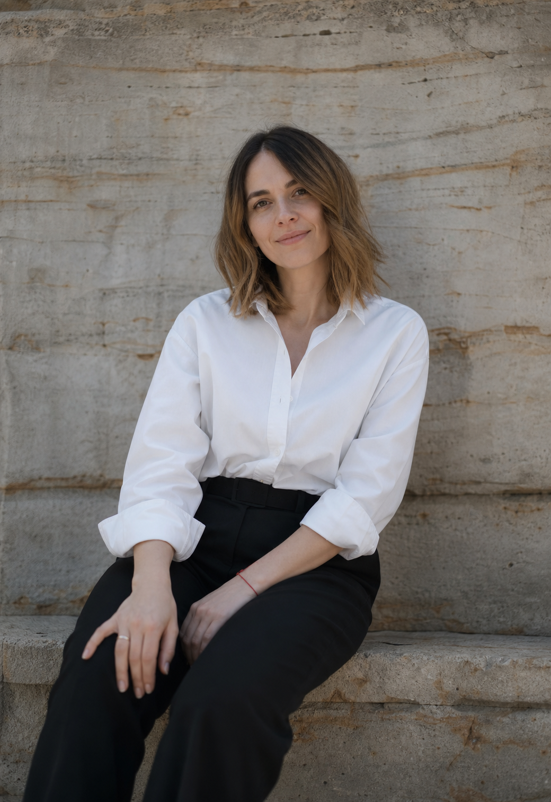
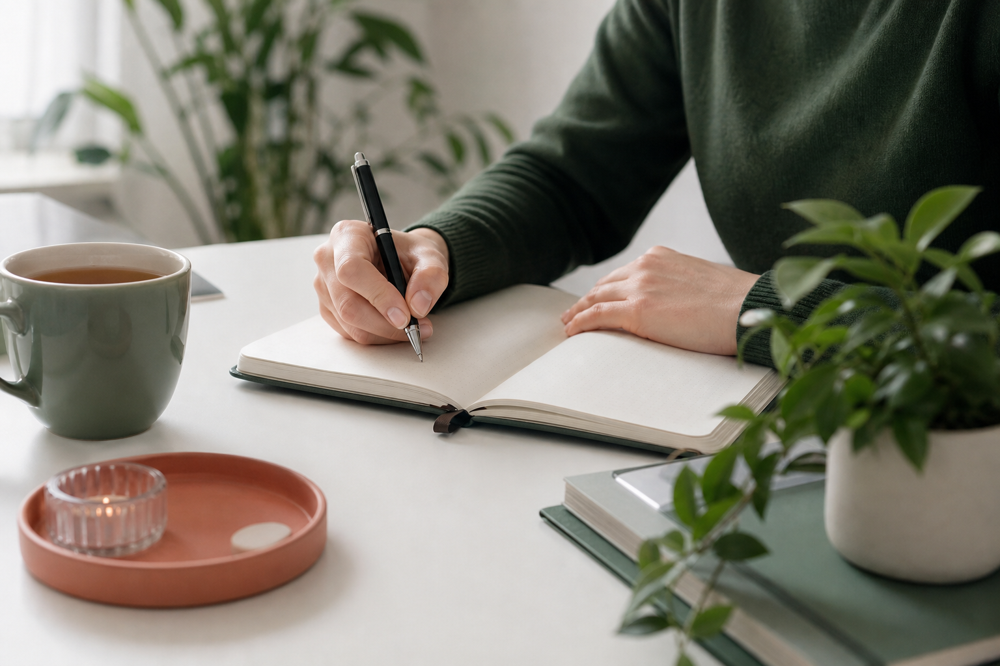
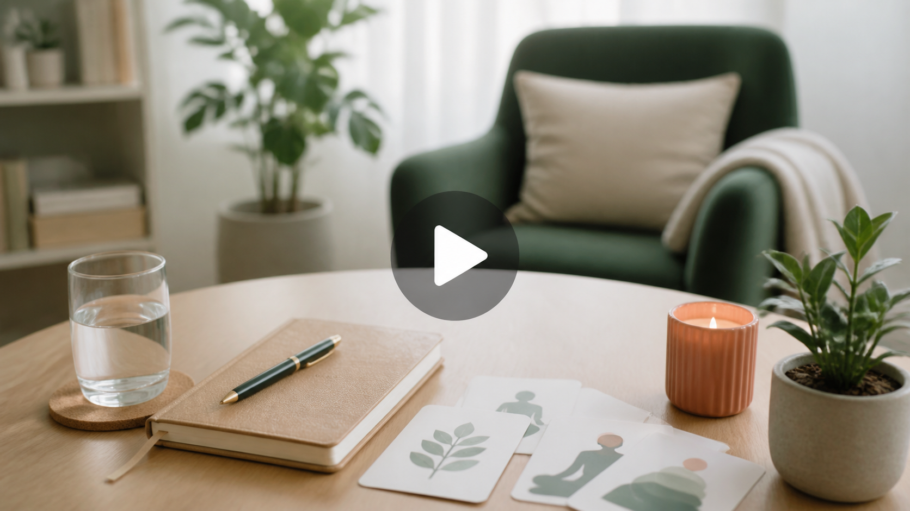
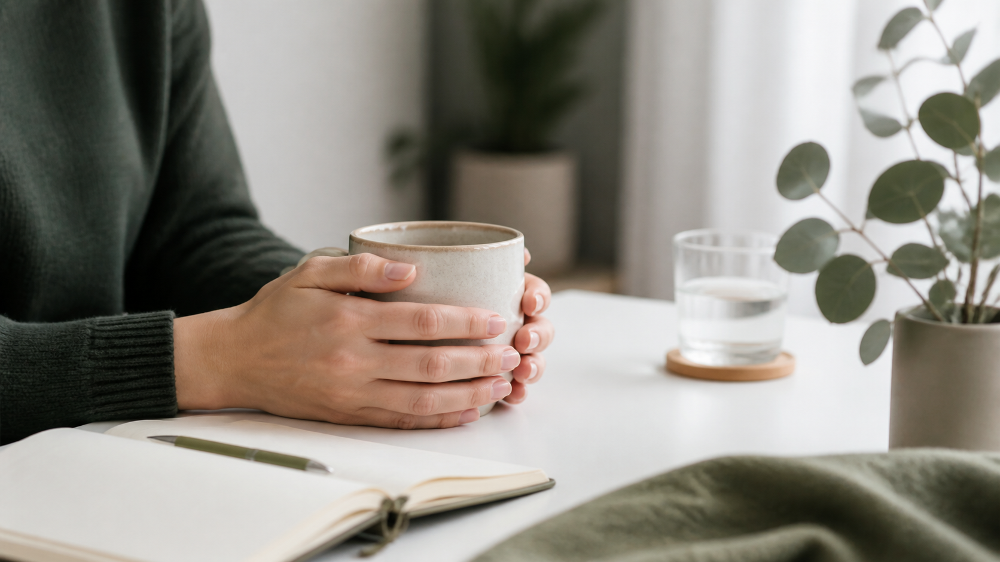

Бережная диагностика
Сначала мы понимаем, что именно происходит: тревога, выгорание, отношения, самооценка или сложный переход.

Поле смысла
сообщество психоаналитических практикующих терапевтов
Сообщество практикующих психоаналитических психологов для тех, кто хочет разобраться в отношениях, переживаниях, повторяющихся сценариях и себе.
- Поле смысла

о сообществе
В центре нашей работы - внимательное исследование внутренней жизни, отношений, повторяющихся сценариев и того опыта, который продолжает влиять на настоящее.
Мы помогаем подобрать специалиста под запрос и формат: разовая консультация, регулярная индивидуальная терапия, онлайн-встречи или очная работа.
о подходе
Сначала мы понимаем, что именно происходит: тревога, выгорание, отношения, самооценка или сложный переход.
Вы уносите не только инсайты, но и конкретные способы поддержать себя между встречами.
Мы двигаемся так, чтобы изменения были возможными, а не просто красивыми на бумаге.
с чем работаем
Зависимость, ревность, охлаждение чувств, измена, развод, расставания, отношения с недоступным партнёром, семейные конфликты, трудности близости и повторяющиеся сценарии.
Тревожность, страхи, панические атаки, перепады настроения, подавленность, апатия, раздражительность, вина, обиды, навязчивые мысли, утрата, внутреннее напряжение и чувство пустоты.
Неуверенность, низкая самооценка, одиночество, зависимость от чужого мнения, усталость соответствовать ожиданиям, перфекционизм, прокрастинация и ощущение «я не справляюсь».
Потеря себя и своих желаний, экзистенциальные кризисы, вопросы взросления, ощущение «живу не свою жизнь», внутренние противоречия и кризисы в личной или профессиональной сфере.
Эмоциональное выгорание, снижение работоспособности, потеря интереса к работе, трудности в профессиональной сфере, отсутствие направления и целей.
Эмоциональные травмы, детский опыт, пережитое насилие, а также телесные симптомы, связанные с эмоциональным состоянием.
терапевты сообщества
психоаналитический психолог
Работает с отношениями, ревностью, эмоциональной зависимостью, разводом и повторяющимися сценариями выбора партнёра.
клинический психолог
Помогает при тревожности, панических атаках, подавленности, перепадах настроения и ощущении внутреннего напряжения.
психоаналитический терапевт
Работает с самооценкой, зависимостью от чужого мнения, перфекционизмом, одиночеством и поиском внутренней опоры.
практикующий психолог
Сопровождает кризисы идентичности, выгорание, потерю смысла, профессиональные трудности и психосоматические проявления.
форматы взаимодействия
Регулярная работа с терапевтом онлайн или очно. Обычно 50 минут, раз в неделю.
ПодобратьОдна встреча, чтобы сформулировать запрос, увидеть возможный фокус и понять, какой специалист подойдёт.
Обсудить запросБудущий раздел с короткими видео, упражнениями и разбором частых тем.
Смотреть разделкак проходит работа
Вы коротко описываете запрос, а я отвечаю, подхожу ли по теме и какой формат будет уместнее.
Мы уточняем историю, договариваемся о цели и темпе. Никаких тестов на правильность ваших чувств.
Отслеживаем изменения, собираем новые способы опоры и бережно проверяем, что правда помогает.
продукты
Короткие ролики можно смотреть в своём темпе: практики, разборы частых состояний и мягкие упражнения между консультациями.


отзывы
“После консультаций стало понятнее, где я правда устала, а где просто привыкла себя подгонять.”
“Очень спокойная атмосфера. Не было ощущения, что меня оценивают или торопят.”
частые вопросы
Да. Иногда первая задача как раз в том, чтобы отделить усталость, тревогу, отношения и ожидания других людей друг от друга.
Да, можно выбрать онлайн-встречу. Важно только спокойное место, где вы сможете говорить без спешки и постоянных отвлечений.
Это зависит от запроса. После первой консультации можно договориться о коротком фокусном формате или о более регулярной работе.
Когда ролики будут готовы, сюда можно подключить YouTube, Vimeo или локальные видеофайлы.